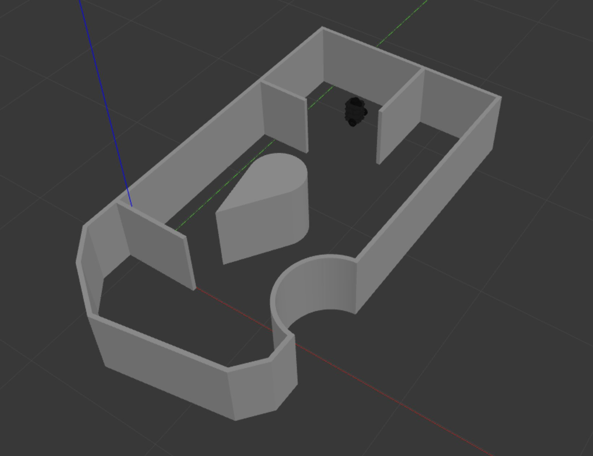

Work / Autonomous Mapping and Localizing Robot
Autonomous Mapping and Localizing Robot
- Context
- RBE 3002 at WPI, spring 2025. Team project.
- Dates
- 2025
- Tools
- ROS, SLAM, A*, AMCL, Python
Try it live
In Autonomous mapping, click the floor to send the robot a goal, or click the scene and drive with W A S D or the arrow keys. In Autonomous localization, drag the robot to a new spot, then click the floor to set a destination.
On this page
The robot is dropped into a maze with no map. It has to explore the whole thing, build a map as it goes, and then, starting from an unknown spot, work out where it is on that map and drive to a goal.

Exploring
To decide where to go next, the robot looks for frontiers: the edges between space it has already mapped and space it hasn't. It groups nearby frontier cells together, picks a group using its centre, and drives there. When there are no frontiers left, the map is done.
Mapping and planning
The map is an occupancy grid built with LiDAR SLAM. We tried two mapping back ends, gmapping and Cartographer. Paths are planned with A* on the grid. The robot drives them without blocking the rest of the program, so it can keep updating the map while it moves.
Finding itself
In the last phase the robot is placed somewhere in the finished maze and uses AMCL, a particle filter, to figure out where it is before driving to the goal.
